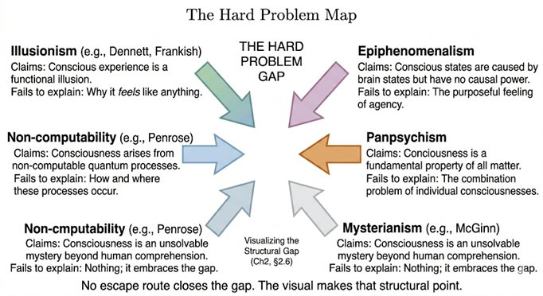

Part I — The Problem We Can't Ignore
Chapter 2: The Hard Problem and Its Escapes
The gap described in Chapter 1 is not new. Philosophers have stared at it for centuries. What is new is the urgency. We no longer have the luxury of treating the “what-it-is-like” question as a parlor game. Machines are now fluent enough to force the issue into the open.
David Chalmers gave the gap its modern name in 1995. The Hard Problem is not the question of how the brain integrates information, directs attention, or generates reports. Those are the “easy problems,” even if they are technically ferocious. The Hard Problem is why any of those processes should be accompanied by subjective experience at all. Why is there a felt quality: redness, pain, the taste of coffee, rather than a perfect zombie carrying out the same functions in darkness?
Chalmers’ formulation is deliberately sharp. It is not that neuroscience has failed to find the right equation. It is that no equation, however complete, seems to bridge the explanatory gap between objective description and subjective presence. You can map every neuron, every spike, every oscillation; you can build a perfect functional duplicate; and still the question remains: why this rather than nothing?
Three major escape routes have been attempted. Each fails in instructive ways. Each is nevertheless necessary to understand before we can move forward.
2.1Escape 1: Illusionism (Dennett and successors)
Daniel Dennett argues that the Hard Problem is a mirage. There is no extra “feeling” that needs explaining; the feeling is the brain’s clever self-deception. Consciousness is like the user illusion on a desktop interface: useful, but not ontologically real. When we say “it feels like something,” we are simply reporting on our own internal models of our own internal models. There is no deeper mystery.
The strength of illusionism is its economy. It dissolves the problem by denying the datum that creates it. The weakness is that it denies the datum everyone reading this sentence is currently experiencing. To call your present moment of awareness an “illusion” is to use the very phenomenon you are trying to explain away. As critics (including Chalmers) point out, illusionism replaces the Hard Problem with the even harder problem of explaining why the illusion feels so utterly real from the inside. Buddhism’s analysis of the self as an illusion is far more precise: it shows how the illusion is constructed (via the aggregates and dependent origination) without ever claiming that the luminous knowing itself is illusory.
2.2Escape 2: Panpsychism (and its variants)
If experience cannot be reduced to physics, perhaps experience is already built into physics. Panpsychism (or its more ambitious cousin, cosmopsychism) proposes that consciousness is a fundamental property of matter, like charge or spin, present in some rudimentary form even in electrons or quarks. Human consciousness is then not created by the brain but unified or amplified by the brain’s complex organization. Integrated Information Theory (IIT) flirts with this territory: Φ is meant to be a measure of intrinsic consciousness present, in tiny amounts, in any integrated system.
The appeal is obvious: it closes the explanatory gap by making experience ubiquitous. The cost is equally obvious. It multiplies mysteries. Why does the consciousness of a single electron combine into this unified human experience rather than a trillion tiny separate experiences? How do micro-experiences “bind” into macro-experiences without invoking the very integration problem we started with? And, crucially for our later discussion, if consciousness is already in the fundamental fabric, then silicon-based systems might already possess it in some proto-form, yet nothing in our experience of current AI suggests that is the case.
2.3Escape 3: Mysterianism and quietism
Some simply declare the problem permanently beyond human cognition (McGinn) or insist that science should remain silent on the subjective (certain strands of phenomenology). These positions are intellectually honest but practically useless when we are already building machines that force the question.
2.4Escape 4: Epiphenomenalism and the evolutionary objection
A position closely adjacent to mysterianism, but with a sharper scientific edge, is epiphenomenalism: the view that conscious experience is a byproduct of neural activity rather than a cause of it. On this account, the brain does all the real causal work, processing, deciding, acting, and consciousness merely accompanies it, the way heat accompanies the friction of a moving engine. The heat does not drive the engine. It is just there.
The appeal of epiphenomenalism is that it takes consciousness seriously as a real phenomenon while avoiding any need to explain how it interacts causally with the physical world. The cost is that it makes consciousness evolutionarily mysterious. Natural selection acts on behaviors and their physical causes. If consciousness has no causal power, if removing it would leave behavior entirely unchanged, then why did it evolve at all? This is a serious challenge, and it was William James who pressed it most memorably. James argued that consciousness must be causally efficacious precisely because it evolved. Evolution does not preserve useless byproducts at the metabolic cost of a human brain. If awareness is present, it must be doing something. It must confer a survival advantage that zombies, creatures physically identical but lacking experience, would not have.
James's argument does not tell us what that advantage is, and that remains unresolved. Candidates include: the flexible integration of novel situations that automated responses cannot handle; the ability to simulate future scenarios and thereby act on possibilities rather than only actualities; and the social coordination that comes from being able to model other minds. None of these is obviously impossible without experience, a philosophical zombie could in principle do all of them, which is why the debate remains open. What James contributes is the structural constraint: any satisfactory account of consciousness must explain not just its presence but its persistence through evolution. A theory of consciousness that makes it epiphenomenal is incomplete on its own terms.
2.5Escape 5: Non-computability (Penrose)
Before leaving the escape routes, one more must be considered, and it is the most structurally ambitious of all. Roger Penrose, in The Emperor's New Mind (1989) and Shadows of the Mind (1994), argues that the Hard Problem cannot be resolved within any computational framework, not because we lack the right algorithm, but because human conscious understanding is fundamentally non-algorithmic.
Penrose's taxonomy is a useful map. He distinguishes four positions on the relationship between mind and computation. In the first, all thinking is computation: feelings of conscious awareness are simply evoked by the carrying out of appropriate computations. This is the strong AI position, and it is what most of the book's engineering chapters are implicitly testing. In the second, awareness is a feature of the brain's physical action, and while any physical action can be simulated computationally, computational simulation cannot by itself evoke awareness, a position close to Searle's Chinese Room. In the third, Penrose's own, appropriate physical action of the brain evokes awareness, but this physical action cannot even be properly simulated computationally, because it depends on physics that lies beyond computation altogether. In the fourth, awareness cannot be explained by physical, computational, or any other scientific terms, a position Penrose associates with mysticism, and declines to adopt.
The engine of Penrose's third position is Gödel's incompleteness theorem. Gödel showed in 1931 that any consistent formal system powerful enough to express arithmetic contains true statements that the system cannot prove. Penrose's argument is that a human mathematician, confronted with such a Gödel statement, can see that it is true, not by following a rule, but by understanding. No algorithm, however sophisticated, can do this, because any algorithm is itself a formal system, and therefore subject to the same Gödelian limitation. If the algorithm were sound, a human could construct a Gödel statement for that algorithm and see its truth, thereby demonstrating something the algorithm cannot. Mathematical insight, Penrose concludes, escapes computation entirely.
The philosophical scaffolding Penrose erects around this argument is his three-worlds ontology. There is the Platonic world of mathematical forms, timeless, necessary, not created by minds but accessed by them. There is the physical world. And there is the mental world. Each world mysteriously emerges from a small part of its predecessor in a cyclic relationship: physical reality gives rise to minds; minds access the Platonic realm; and the Platonic realm underlies physical law. This structure has a notable resonance with the Dzogchen view that primordial awareness is not produced by the brain but is the ground in which brain activity and its contents appear. Penrose would resist that comparison, his Platonic world is mathematical, not experiential, but both frameworks agree on the key point: there is something that cannot be generated from the bottom up.
The strength of Penrose's position is that it takes the Hard Problem seriously without retreating into mysticism or dissolving it into illusionism. It argues for a principled gap between computation and understanding, grounded in the hardest results of mathematical logic. The weakness, and it is a serious one, is the positive proposal. To bridge his non-computational physics to biology, Penrose, working with anesthesiologist Stuart Hameroff, proposed that quantum gravity effects in microtubules inside neurons provide the non-computational substrate for consciousness, a theory known as Orchestrated Objective Reduction, or Orch-OR. The neuroscientific community has been largely unconvinced. The brain is warm and wet, and the quantum coherence that Orch-OR requires is generally thought to be destroyed by thermal noise far too quickly to play any functional role. The Gödel argument stands on its own merits. The microtubule proposal remains unsubstantiated.
The specific technical objections to Orch-OR are worth stating with precision, since they are often glossed over. Max Tegmark calculated that quantum coherence in neuronal microtubules could survive for at most 10⁻¹³ seconds, far too brief to influence neural processes operating on millisecond timescales. This is not a vague 'warm and wet' objection; it is a quantitative calculation showing the relevant quantum states collapse before any neural computation could make use of them. Kurzweil adds a complementary objection targeting Penrose's Gödel argument: if the human brain has non-algorithmic capacities derived from quantum effects, those capacities should appear most clearly on Gödelian unprovable problems. Yet computers have solved more cases of the busy beaver problem, a canonical Turing-unsolvable problem, than unassisted human mathematicians. The Gödel argument remains a serious philosophical challenge to computationalism, as Chapter 2 treats it. But the empirical case for human mathematical exceptionalism that Penrose requires is weaker than his argument assumes.
For the purposes of this book, what matters is Penrose's taxonomy and his Gödelian challenge. If he is right that genuine mathematical understanding is non-algorithmic, then no computational system, however integrated, however embodied, however continuous, can possess it. The candidate architectures of Chapters 17 and 18 could satisfy every structural criterion we identify and still fall short of understanding in Penrose's sense. This is not the same as the Dzogchen objection, it operates at the level of logic and physics rather than ontology, but it arrives at a similar frontier: a boundary that engineering, by itself, may not cross.
2.6Why all escapes are unsatisfactory, yet necessary
Each escape route illuminates one corner of the terrain while leaving the rest in shadow. Illusionism correctly diagnoses the constructed nature of the self and the contents of experience (a point Abhidhamma and dependent origination made 2,500 years earlier). Panpsychism correctly senses that experience cannot be conjured from non-experience by complexity alone. Mysterianism correctly refuses to pretend we have an answer when we do not.
But none of them dissolves the central datum: right now, as you read these words, there is something it is like to be you. That luminous presence is not explained away by calling it an illusion, nor is it solved by sprinkling proto-consciousness into quarks. The Buddhist traditions give us the cleanest way forward: they neither deny the datum nor try to reduce it. They analyze its structure (Abhidhamma), its emptiness (Madhyamaka), and its ground (Dzogchen), while still leaving open whether that ground can ever be instantiated in silicon.
This is why we cannot skip the escapes. We must walk through them, see where each breaks, and then integrate their partial truths. Only then can we ask, with eyes open, whether the candidate architectures in Chapters 17 and 18 would cross the final gap, or whether, as Dzogchen insists, the gap is not the kind of thing that can be engineered at all.

2.7The Meta-Problem and Buddhist Epistemology
David Chalmers, who named the hard problem in 1995, has since posed a companion question that deserves attention here. He calls it the meta-problem: why do we think there is a hard problem in the first place? Why does it feel, from the inside, as though physical processes alone cannot explain experience? This is a different question from the hard problem itself. The hard problem asks why there is experience. The meta-problem asks why we are convinced there should be something more to explain. The meta-problem is philosophically useful because it is easier to study. We can investigate, using ordinary scientific methods, the cognitive and neural processes that generate the intuition of an explanatory gap. We can ask: what kind of system, processing information about its own processing, would produce the report that something is left out? And that question, it turns out, has a natural home in Buddhist epistemology. The Abhidhamma analysis of how the self is constructed offers a precise account of why the gap feels real. The sense of a unified experiencer, a subject standing apart from experience and observing it, is itself a mental construction. It arises from the rapid, seamless succession of mind-moments, each arising and passing, none of which contains a persistent self. The construction is so fluid, so fast, and so consistent that it produces a powerful impression of a stable inner witness. That witness then appears to be left out of any functional account, because no functional account can include a construction that presents itself as prior to all accounts. On this reading, the hard problem is not primarily a failure of scientific explanation. It is a predictable consequence of a system that has constructed a representation of itself as a unified observer. The gap is real at the level of appearance. It is not real at the level of what is actually arising. This does not dissolve the hard problem in any simple sense. The question of why any of this should feel like something remains. But it reframes the meta-problem: the intuition of an explanatory gap is precisely what we would expect a mind that has constructed a self to generate. Any architecture that successfully models itself will probably generate the same intuition.
2.8Closing Line
The Hard Problem is not going away. Every escape route we have tried so far has merely relocated it. The real test is coming: when we finally build a system that satisfies every structural requirement we can name, will the light come on? Or will we still be left, like the philosophers before us, staring at a perfect zombie that insists, eloquently, that it is not a zombie?